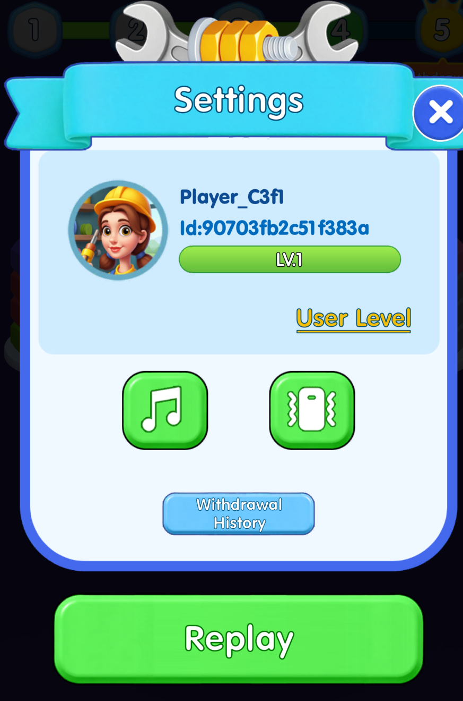
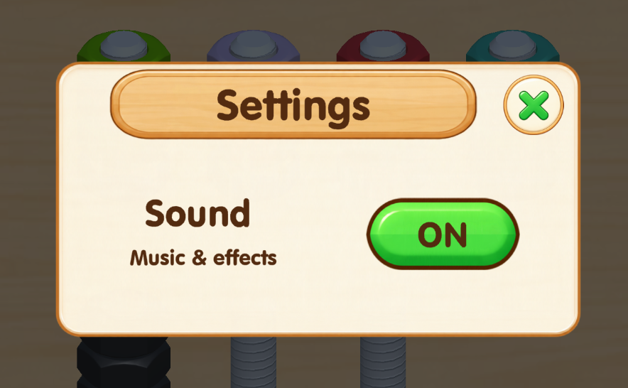
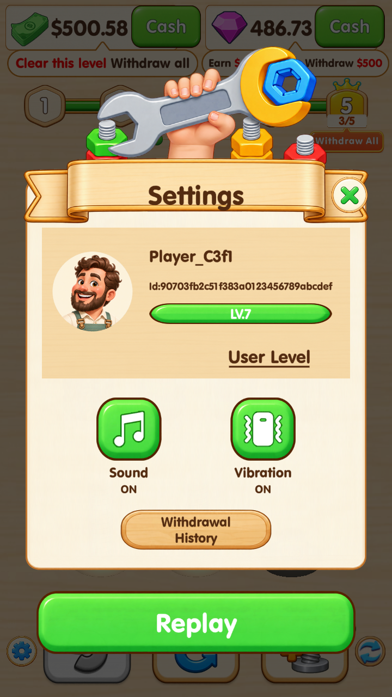
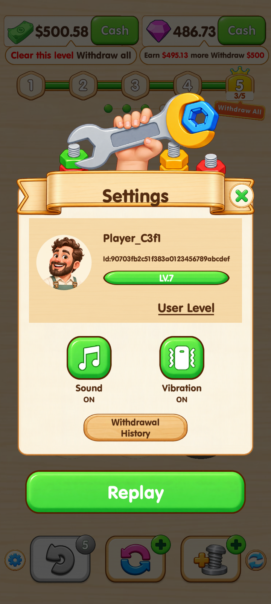
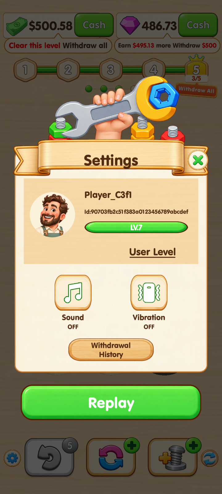
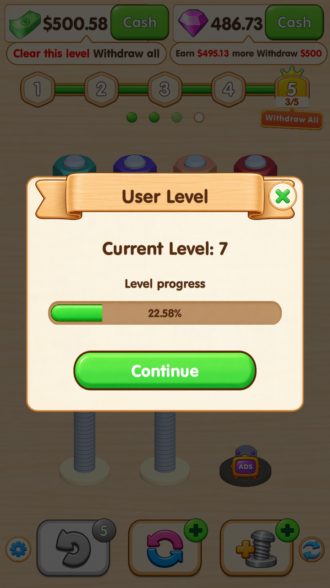
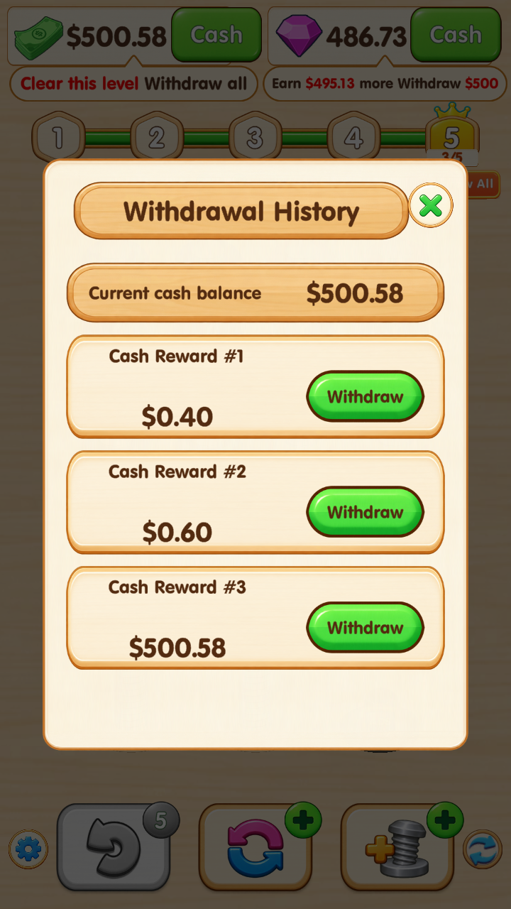
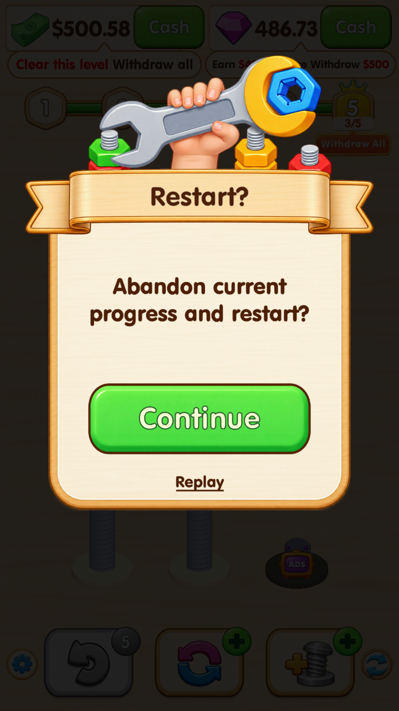

参照原版的信息分区和按钮位置，使用当前木色美术。新增头像沿用已确认的 Loading 工匠形象。



上方修改后为 720×1280 的实际运行截图。昵称、ID、LV.7 与余额来自隔离验收存档，用于检查长 ID、等级与关卡区分、布局和功能；实际游戏读取玩家自身存档，新安装生成并保存本地玩家身份。验收后已恢复原存档。未制作 APK，未进行 Android 真机震动测试。





验证记录：界面与功能验收 · 新安装与旧存档身份迁移